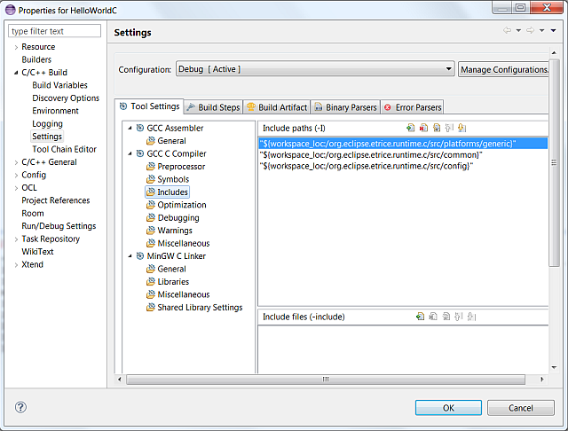

Before you can build the application you must setup the include path for the runtime system. Right click the project and select Properties. Add the include path as described in setting up the workspace.

Add the runtime library.

Recognize the name of the library („org.eclipse.etrice.runtime.c”). The library file on your disk is „liborg.eclipse.etrice.runtime.c.a”.